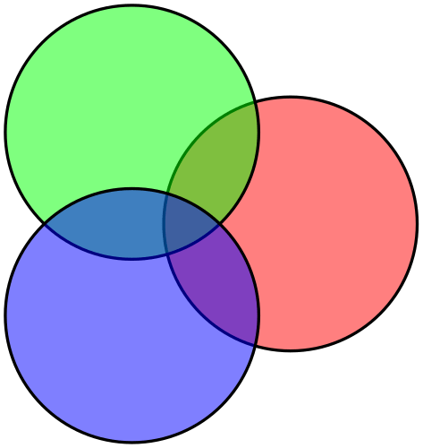
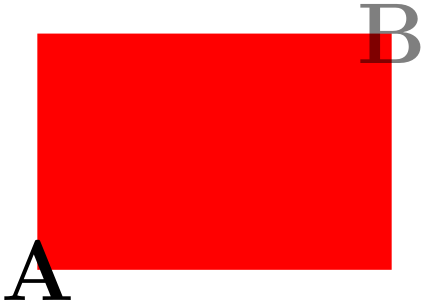
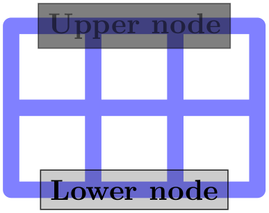
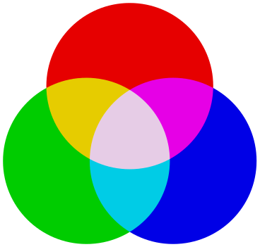
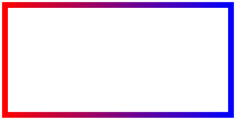

The TikZ and PGF Packages
Manual for version 3.1.9a
TikZ
23 Transparency
23.1 Overview¶
Normally, when you paint something using any of TikZ’s commands (this includes stroking, filling, shading, patterns, and images), the newly painted objects totally obscure whatever was painted earlier in the same area.
You can change this behavior by using something that can be thought of as “(semi)transparent colors”. Such colors do not completely obscure the background, rather they blend the background with the new color. At first sight, using such semitransparent colors might seem quite straightforward, but the math going on in the background is quite involved and the correct handling of transparency fills some 64 pages in the PDF specification.
In the present section, we start with the different ways of specifying “how transparent” newly drawn objects should be. The simplest way is to just specify a percentage like “60% transparent”. A much more general way is to use something that I call a fading, also known as a soft mask or a mask.
At the end of the section we address the problem of creating so-called transparency groups. This problem arises when you paint over a position several times with a semitransparent color. Sometimes you want the effect to accumulate, sometimes you do not.
Note: Transparency (or Opacity, as it may be called as well) is best supported by the pdfTeX driver. The svg driver also has some support. The PostScript file format does not know about transparency. In dvips-generated PostScript files, transparency of graphic objects is defined through special commands that need further processing to become visible in the pdf output. For this, a recent version of Ghostscript, preferably 9.52 or newer, is required and its command line utility ps2pdf must be called with option -dALLOWPSTRANSPARENCY. Older versions may need option -dNOSAFER instead, but some advanced features, such as transparency groups and fadings, may not work at all. Printers and other programs will typically ignore opacity settings in PostScript files.
23.2 Specifying a Uniform Opacity¶
Specifying a stroke and/or fill opacity is quite easy using the following options.
/tikz/draw opacity=⟨value⟩(no default) ¶
This option sets “how transparent” lines should be. A value of 1 means “fully opaque” or “not transparent at all”, a value of 0 means “fully transparent” or “invisible”. A value of 0.5 yields lines that are semitransparent.
Note that when you use PostScript as your output format, this option works only with recent versions of Ghostscript.
\begin{tikzpicture}[line width=1ex]
\draw (0,0) --
(3,1);
\filldraw [fill=yellow!80!black,draw opacity=0.5] (1,0) rectangle
(2,1);
\end{tikzpicture}
Note that the draw opacity options only sets the opacity of drawn lines. The opacity of fillings is set using the option fill opacity (documented in Section 15.5.3. The option opacity sets both at the same time.
/tikz/opacity=⟨value⟩(no default) ¶
Sets both the drawing and filling opacity to ⟨value⟩.
The following predefined styles make it easier to use this option:

/tikz/very nearly transparent(style, no value) ¶
/tikz/nearly transparent(style, no value) ¶
/tikz/semitransparent(style, no value) ¶
/tikz/nearly opaque(style, no value) ¶
/tikz/very nearly opaque(style, no value) ¶
/tikz/ultra nearly opaque(style, no value) ¶
/tikz/fill opacity=⟨value⟩(no default) ¶
This option sets the opacity of fillings. In addition to filling operations, this opacity also applies to text and images.
Note, again, that when you use PostScript as your output format, this option works only with recent versions of Ghostscript.

\begin{tikzpicture}[thick,fill opacity=0.5]
\filldraw[fill=red] (0:1cm) circle
(12mm);
\filldraw[fill=green] (120:1cm) circle
(12mm);
\filldraw[fill=blue] (-120:1cm) circle
(12mm);
\end{tikzpicture}

\begin{tikzpicture}
\fill[red] (0,0) rectangle
(3,2);
\node at
(0,0) {\huge A};
\node[fill opacity=0.5] at
(3,2) {\huge B};
\end{tikzpicture}
/tikz/text opacity=⟨value⟩(no default) ¶
Sets the opacity of text labels, overriding the fill opacity setting.

\begin{tikzpicture}[every node/.style={fill,draw}]
\draw[line width=2mm,blue!50,line cap=round] (0,0) grid
(3,2);
\node[opacity=0.5] at
(1.5,2) {Upper
node};
\node[draw opacity=0.8,fill opacity=0.2,text opacity=1]
at
(1.5,0) {Lower
node};
\end{tikzpicture}
Note the following effect: If you set up a certain opacity for stroking or filling and you stroke or fill the same area twice, the effect accumulates:
\begin{tikzpicture}[fill opacity=0.5]
\fill[red] (0,0) circle
(1);
\fill[red] (1,0) circle
(1);
\end{tikzpicture}
Often, this is exactly what you intend, but not always. You can use transparency groups, see the end of this section, to change this.
23.3 Blend Modes¶
A blend mode specifies how colors mix when you paint on a canvas. Normally, if you paint a red box on a green circle, the red color will completely replace the green circle. However, in some situations you might also wish the red color to somehow “mix” or “blend” with the green circle. We already saw that, using transparency, we can draw something without completely obscuring the background. Blending is a similar operation, only here we mix colors in more complicated ways.
Note: Blending is a rather “advanced” feature of pdf. Most renderers, let alone printers, will have trouble rendering blending correctly.
/tikz/blend mode=⟨mode⟩(no default) ¶
Sets the current blend mode to ⟨mode⟩. Here ⟨mode⟩ must be one of the modes listed below. More details on these modes can also be found in Section 7.2.4 of the pdf Specification, version 1.7.
In the following example, the blend mode is only used and set inside a transparency group (see also Section 23.4). This is because most renderers (viewing programs) have trouble rendering blending correctly otherwise. For instance, at the time of writing, the versions of Adobe’s Reader and Apple’s Preview render the following drawing very differently, if the transparency group is not used in the following example.

Because of the trouble with rendering blending correctly outside transparency groups, there is a special key that establishes a transparency group and sets a blend mode simultaneously:
/tikz/blend group=⟨mode⟩(no default) ¶
This key can only be used with a scope (like transparency group). It will cause the current scope to become a transparency group and, inside this group, the blend mode will be set to ⟨mode⟩.
Here is an overview of the effects of the different available blend modes. In the examples, we always have three circles drawn on top of each other (as in the example code earlier): We start with a triple of pure red, green, and blue. Below it, we have a triple of light versions of these three colors (red!50, green!50, and blue!50). Next comes the triple yellow, cyan, and magenta; again with a triple of light versions below it. The large example consists of three balls (produced using ball color) having the colors red, green, and blue, are drawn on top of each other just like the circles.
23.4 Transparency Groups¶
Consider the following cross and sign. They “look wrong” because we can see how they were constructed, while this is not really part of the desired effect.
\begin{tikzpicture}[opacity=.5]
\draw [line width=5mm] (0,0) --
(2,2);
\draw [line width=5mm] (2,0) --
(0,2);
\end{tikzpicture}
\usetikzlibrary {shapes.symbols}
\begin{tikzpicture}
\node at
(0,0) [forbidden sign,line width=2ex,draw=red,fill=white] {Smoking};
\node [opacity=.5]
at
(2,0) [forbidden sign,line width=2ex,draw=red,fill=white] {Smoking};
\end{tikzpicture}
Transparency groups are used to render them correctly:
\begin{tikzpicture}[opacity=.5]
\begin{scope}[transparency group]
\draw [line width=5mm] (0,0) --
(2,2);
\draw [line width=5mm] (2,0) --
(0,2);
\end{scope}
\end{tikzpicture}
\usetikzlibrary {shapes.symbols}
\begin{tikzpicture}
\node at
(0,0) [forbidden sign,line width=2ex,draw=red,fill=white] {Smoking};
\begin{scope}[opacity=.5,transparency group]
\node at
(2,0) [forbidden sign,line width=2ex,draw=red,fill=white]
{Smoking};
\end{scope}
\end{tikzpicture}
/tikz/transparency group=[⟨options⟩](no default) ¶
This option can be given to a scope. It will have the following effect: The scope’s contents is stroked / filled “ignoring any outside transparency”. This means, all previous transparency settings are ignored (you can still set transparency inside the group, but never mind). For instance, in the forbidden sign example, the whole sign is first painted (conceptually) like the image on the left hand side. Note that some pixels of the sign are painted multiple times (up to three times), but only the last color “wins”.
Then, when the scope is finished, it is painted as a whole. The fill transparency settings are now applied to the resulting picture. For instance, the pixel that has been painted three times is just red at the end, so this red color will be blended with whatever is “behind” the group on the page.
\usetikzlibrary {patterns,shapes.symbols}
\begin{tikzpicture}
\pattern[pattern=checkerboard,pattern color=black!15](-1,-1) rectangle
(3,1);
\node at
(0,0) [forbidden sign,line width=2ex,draw=red,fill=white] {Smoking};
\begin{scope}[transparency group,opacity=.5]
\node at
(2,0) [forbidden sign,line width=2ex,draw=red,fill=white]
{Smoking};
\end{scope}
\end{tikzpicture}
Note that in the example, the opacity=.5 is not active inside the transparency group: The group is only established at beginning of the scope and all options given to the {scope} environment are set before the group is established. To change the opacity inside the group, you need to open another scope inside it or use the opacity key with a command inside the group:
\usetikzlibrary {patterns,shapes.symbols}
\begin{tikzpicture}
\pattern[pattern=checkerboard,pattern color=black!15](-1,-1) rectangle
(3,1);
\node at
(0,0) [forbidden sign,line width=2ex,draw=red,fill=white] {Smoking};
\begin{scope}[transparency group,opacity=.5]
\node (s) at
(2,0) [forbidden sign,line width=2ex,draw=red,fill=white]
{Smoking};
\draw [opacity=.5, line width=2ex, blue] (1.2,0) --
(2.8,0);
\end{scope}
\end{tikzpicture}
The ⟨options⟩ are a list of comma-separated options:
•knockout When this option is given inside the ⟨options⟩, the group becomes a so-called knockout group. This means, essentially, that inside the group everything is painted as if the “opacity” of a line or area were just another color channel. In particular, if you paint a pixel with opacity \(0\) inside a knockout group, this pixel becomes perfectly transparent immediately. In contrast, painting a pixel with something of opacity \(0\) normally has no effect.
Not all renderers, let alone printers, will support this. At the time of writing, Apple’s Preview will not show the following correctly (you should see the text TikZ in the middle):

\begin{tikzpicture}
\shade [left color=red,right color=blue] (-2,-1) rectangle
(2,1);
\begin{scope}[transparency group=knockout]
\fill [white] (-1.9,-.9) rectangle
(1.9,.9);
\node [opacity=0,font=\fontencoding{T1}\fontfamily{ptm}\fontsize{45}{45}\bfseries]
{Ti\emph{k}Z};
\end{scope}
\end{tikzpicture}
In the example, we first draw a large shading and then, inside the transparency group “overwrite” most of this shading by a big white rectangle. The interesting part is the text of the node, which has opacity 0. Normally, this would mean that nothing is shown. However, in a knockout group, we “paint” the text with an “opacity zero” color. The effect is that part of the totally opaque white rectangle gets overwritten by a perfectly transparent area (namely exactly the area taken up by the pixels of the text). When this whole knockout group is then placed on top of the shading, the shading will “shine through” at the knocked-out pixels.
•isolated=false A group can be isolated or not. By default, they are isolated, since this is typically what you want. For details on what isolated groups are, exactly, see Section 7.3.4 of the pdf Specification, version 1.7.
Note that when a transparency group is created, TikZ must correctly determine the size of the material inside the group. Usually, this is no problem, but when you use things like overlay or transform canvas, trouble may result. In this case, please consult Section 114 on how to sidestep this problem in such cases.